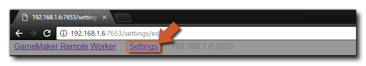
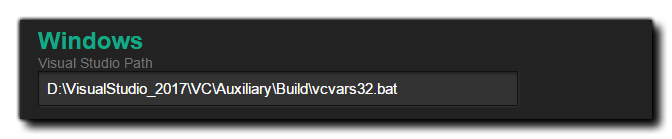

When you compile your game, you usually use the "Local" worker, which is the computer that GameMaker Studio 2 has been installed on. However under some circumstances you may need to use another computer to build your projects. For example, if you are working on a Mac and you want to build a Windows project, then you would want to configure a Remote Worker and have a Windows PC do the build. Essentially, when you use a remote worker, GameMaker Studio 2 will send all the required files from the (local) machine it is running on to the remote worker machine, and then use that machine to build the final executable for the project (either saving it on the remote machine, or returning it to the local machine afterwards). However, before you can use this functionality you will have to have installed certain tools on the build machine and performed some setting up, which we will explain here.
To set up a remote worker you will need to first install the Remote Worker build tool application onto the PC that is to be used. You can find this tool by going to the Build Menu in GameMaker Studio 2 on the local machine and selecting the option "Show Remote Worker Installer":
Alternatively, you can click the "eye" icon in the Target Manager, and get the Remote Worker installer that way:
The installer will be called something like "GameMakerStudio-Remote-Installer-X.X.X.XXX.exe" and you need to copy it over to the PC that you want to use as the remote worker (you do not need to have GameMaker Studio 2 installed on the remote worker, just this program). Once you have copied it to the build PC, install it following the on-screen prompts and when the installer has finished, you may be asked by the OS for access through the firewall to your network. Once you grant access, the installer will then open a page in your web browser and you must note down the IP address and Port number shown on this page as you will need it for the next step.
You now need to go back to the machine where you have GameMaker Studio 2 installed and click the Target Manager button
to open up the Target Manager window, and there go to the Worker section and click the Add Worker button
. This will then open the following window:
Here you need to give your Remote Worker a name (this is what will be shown in the Worker list in the Target Manager) and in then in the Host Name section, add the address you were shown and noted previously from the worker machine, including the port number.
If all has gone correctly you should now get a message saying that you can successfully connect to the remote worker machine. Once you have your Remote Worker installed and connected to your main IDE computer, you will need to go and set up the Local Build Settings for each platform (see the section below for more details) before being able to compile your project.
The settings page shows the different paths and build settings for the Remote Worker application. At the top of the settings you have the different paths that will be used by the Remote Worker application and before doing anything else these should be revised and set to alternative paths if required (in general the Default paths should be fine though). You can access the Remote Worker settings page using any one of the following methods:
- Click the "Settings" link at the top of the Remote Worker page that opens in the browser of your remote machine: 
- Use the RMB on the Remote Worker tray icon to open the settings in the browser of your remote machine:
- On your local machine, open the Target Manager and click the "cog" icon top open the worker settings in a window on your local machine :
This will show the settings page where you can see (and set) the different options that permit you to set the paths for building your project:
After checking the paths for the Remote Worker application to use, you can then set (if required) the different Local Build Settings. Different platforms will require different build tools to be installed on the build PC and the remote worker will need to be able to use them to build your games through the Settings page. The first settings here are the General settings:
Here you can set up the Port for the Help Server and the port for the Debugger to use. These can be changed should you have any connection issues when using the debug module but in general should be left at their default values.
You can now go ahead and setup the different options for the platforms that the Remote Worker can build for:
- Windows 
If you have access to the Windows target platform, you should be able to build using the remote worker on the Windows PC immediately using the VM option. However if you wish to use the YYC then you will also need to set the path to Visual Studio on the build PC. For full details of how to set up a Windows PC to compile your projects, please see the following helpdesk article:
Once you have your Remote Worker set up and have completed the Local Build Settings (see the section above), you can start to use it for compiling your games. For this, it's simply a case of selecting the Remote Worker from the Target Manager list, selecting the platform to test/compile for, as well as any other options (like compile type or configuration), and then pressing Play
or Create Executable
.
NOTE: The available platforms in the Target Manager will change depending on the capabilities of the Remote Worker computer, and not all targets will be available. Also note that there is no "Test" target for Remote Workers.
If you are simply playing the project, then the Remote Worker machine will compile and run it, but if you are creating an executable, then then Remote Worker will compile the project and then return a *.zip file to the local machine for saving.It should be noted that neither the Debug button
nor the Clean button
will be available when using a Remote Worker. Also note that you can only perform one remote build at a time currently.


Once you have the Remote Worker installed and running on your
remote machine, it will appear in the task bar as an icon, and you
can right-click on it to bring up the following options:

- Open: Open the Remote Worker application in your default browser.
- Show Log: Open the log file for the Remote Worker in your browser.
- Network Settings: Here you can filter which machines you want to be able to send builds to the Remote Worker machine. Each filter can be a CIDR style filter or a hostname of a machine to allow. You should be aware that if you want multiple machines to connect to one remote worker, or if you're mixing connection types (ie: wired and wifi), then you may need to edit the IP allowed range here.
- Edit Settings: Open the Remote Worker settings menu (explained in the Settings section, above).
- Exit: Exit the Remote Worker app. This will mean that you can no longer connect (nor compile) with the app from a local machine until you restart the Remote Worker app.